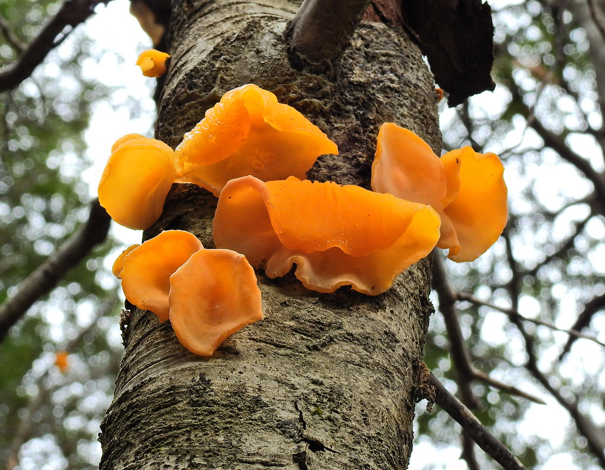

Aleurodiscus vitellinus
Se destaca por sus fructificaciones gelatinosas discoide-cupuliformes, de color naranja o naranja/rosado.
Sus basidiomas alcanzan un tamaño de 2 - 6 cm de diámetro y hasta 4 cm de altura. La textura y el color
de estos hongos varían con el contenido de agua: firmes y de color claro cuando jóvenes, tornándose
gelatinosos y anaranjado fuerte a la madurez.